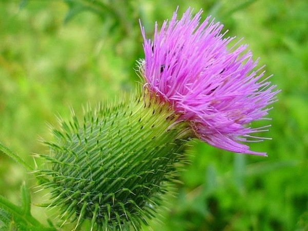

Els cards són reconeguts per la gran quantitat d'espines que tenen, però també hi ha espècies que són comestibles i fins i tot alguna de
medicinal. En concret, el card marià, és un bon protector del fetge,
fins al punt de protegir de les toxines del bolet verinós Amanita phalloides. Una altra
aplicació tradicional és la de quallar la llet que s'ha d'emplear per
fer formatge o brossat, encara que els qualls sintètics li han guanyat
terreny, sobretot en la producció formatgera a nivell industrial.
Anys enrere en algunes zones el card es cultivava com a verdura, i
encara ara els beduïns del desert del Sàhara se'n mengen els cors de
les inflorescències, cruus, com si fossin carxofes. Sempre, és clar,
abans de que s'hagin assecat!
És una planta molt resistent i que creix de manera silvestre a zones
amb molta radiació solar, i no és rar veure'l a voreres de camins o a
terrenys no cultivats, en companyia de les ortigues.
La seva floració és a partir de maig i si s'ha de collir ha de ser a començament de primavera. Alerta amb les taques, ja que el material vegetal humit pot tacar de forma permanent els teixits.
| Estat i efecte | ||
|---|---|---|
| Secs | → | Piquen |
| Verds | → | Taquen |